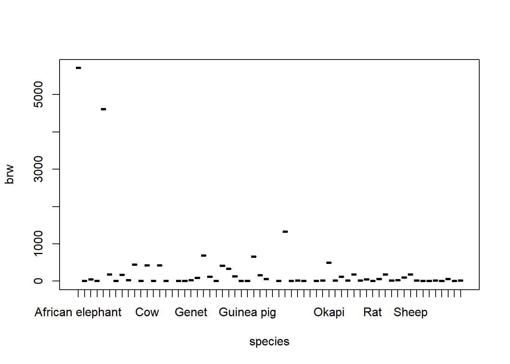
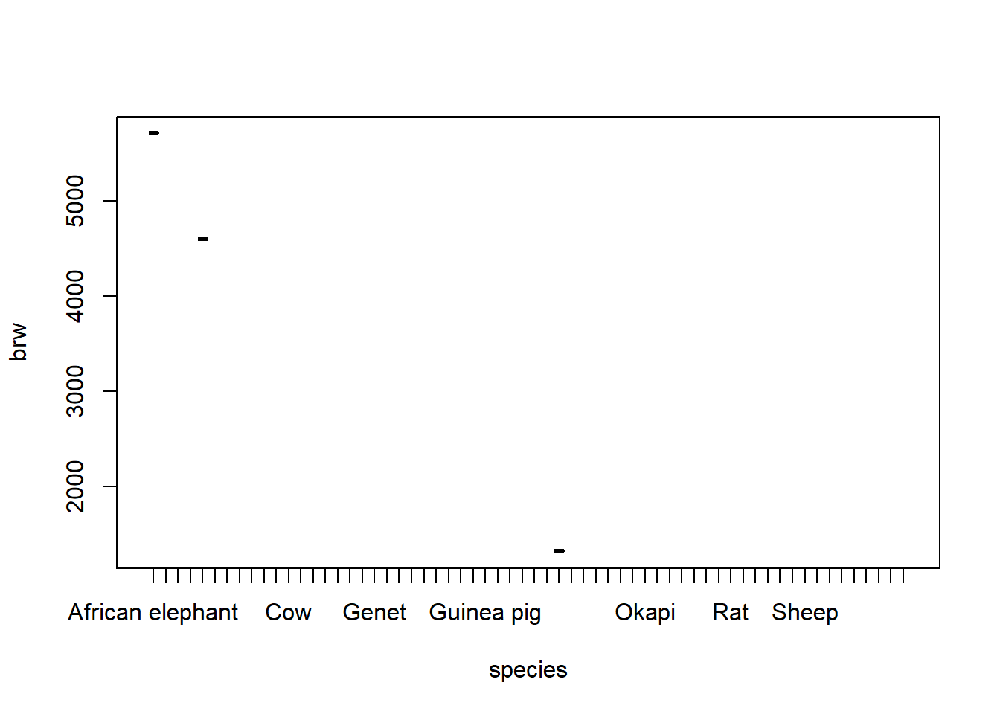
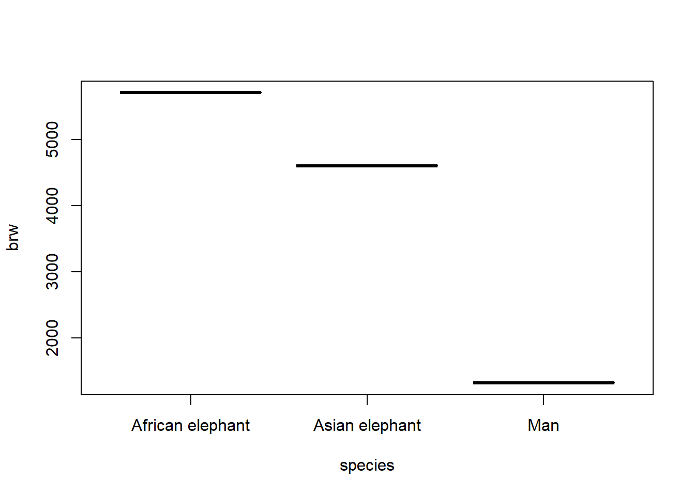

load("Sleepdata.RData")Modelling Basics - Practical 1
Exercises
- Open
RStudioin your practicals project. Create a new script to work with in this first practical related to modelling. Figure out a naming so you would be able to find it back.
- Remember that we saved our dataset before? Let’s load it and continue!
If you did not store this, use the following code:
sleepdata <- mice::mammalsleepThe :: refers R to the content of a package we did not ask it to load yet. This way it knows where to find the mammalsleep data.
- Some animals were not used in the calculations by Allison and Cicchetti. Exclude the following animals from the sleepdata dataset: Echidna, Lesser short-tailed shrew and Musk shrew. Save the dataset as sleepdata2. Tip: use the square brackets to indicate [rows, columns].
There are three ways to exclude the three animals from the dataset. The first approach uses the names:
exclude <- c("Echidna", "Lesser short-tailed shrew", "Musk shrew")
which <- sleepdata$species %in% exclude #Indicate the species that match the names in exclude
which [1] FALSE FALSE FALSE FALSE FALSE FALSE FALSE FALSE FALSE FALSE FALSE FALSE
[13] FALSE FALSE FALSE TRUE FALSE FALSE FALSE FALSE FALSE FALSE FALSE FALSE
[25] FALSE FALSE FALSE FALSE FALSE FALSE FALSE TRUE FALSE FALSE FALSE FALSE
[37] FALSE TRUE FALSE FALSE FALSE FALSE FALSE FALSE FALSE FALSE FALSE FALSE
[49] FALSE FALSE FALSE FALSE FALSE FALSE FALSE FALSE FALSE FALSE FALSE FALSE
[61] FALSE FALSEsleepdata2 <- sleepdata[!which, ]the second approach uses function filter() from package dplyr:
library(dplyr) # Data ManipulationWarning: package 'dplyr' was built under R version 4.2.3
Attaching package: 'dplyr'The following objects are masked from 'package:stats':
filter, lagThe following objects are masked from 'package:base':
intersect, setdiff, setequal, unionfilter(sleepdata, !sleepdata$species %in% exclude) # ! makes all TRUES into FALSE species bw brw sws ps ts mls gt pi sei
1 African elephant 6654.000 5712.00 NA NA 3.3 38.6 645 3 5
2 African giant pouched rat 1.000 6.60 6.3 2.0 8.3 4.5 42 3 1
3 Arctic Fox 3.385 44.50 NA NA 12.5 14.0 60 1 1
4 Arctic ground squirrel 0.920 5.70 NA NA 16.5 NA 25 5 2
5 Asian elephant 2547.000 4603.00 2.1 1.8 3.9 69.0 624 3 5
6 Baboon 10.550 179.50 9.1 0.7 9.8 27.0 180 4 4
7 Big brown bat 0.023 0.30 15.8 3.9 19.7 19.0 35 1 1
8 Brazilian tapir 160.000 169.00 5.2 1.0 6.2 30.4 392 4 5
9 Cat 3.300 25.60 10.9 3.6 14.5 28.0 63 1 2
10 Chimpanzee 52.160 440.00 8.3 1.4 9.7 50.0 230 1 1
11 Chinchilla 0.425 6.40 11.0 1.5 12.5 7.0 112 5 4
12 Cow 465.000 423.00 3.2 0.7 3.9 30.0 281 5 5
13 Desert hedgehog 0.550 2.40 7.6 2.7 10.3 NA NA 2 1
14 Donkey 187.100 419.00 NA NA 3.1 40.0 365 5 5
15 Eastern American mole 0.075 1.20 6.3 2.1 8.4 3.5 42 1 1
16 European hedgehog 0.785 3.50 6.6 4.1 10.7 6.0 42 2 2
17 Galago 0.200 5.00 9.5 1.2 10.7 10.4 120 2 2
18 Genet 1.410 17.50 4.8 1.3 6.1 34.0 NA 1 2
19 Giant armadillo 60.000 81.00 12.0 6.1 18.1 7.0 NA 1 1
20 Giraffe 529.000 680.00 NA 0.3 NA 28.0 400 5 5
21 Goat 27.660 115.00 3.3 0.5 3.8 20.0 148 5 5
22 Golden hamster 0.120 1.00 11.0 3.4 14.4 3.9 16 3 1
23 Gorilla 207.000 406.00 NA NA 12.0 39.3 252 1 4
24 Gray seal 85.000 325.00 4.7 1.5 6.2 41.0 310 1 3
25 Gray wolf 36.330 119.50 NA NA 13.0 16.2 63 1 1
26 Ground squirrel 0.101 4.00 10.4 3.4 13.8 9.0 28 5 1
27 Guinea pig 1.040 5.50 7.4 0.8 8.2 7.6 68 5 3
28 Horse 521.000 655.00 2.1 0.8 2.9 46.0 336 5 5
29 Jaguar 100.000 157.00 NA NA 10.8 22.4 100 1 1
30 Kangaroo 35.000 56.00 NA NA NA 16.3 33 3 5
31 Little brown bat 0.010 0.25 17.9 2.0 19.9 24.0 50 1 1
32 Man 62.000 1320.00 6.1 1.9 8.0 100.0 267 1 1
33 Mole rat 0.122 3.00 8.2 2.4 10.6 NA 30 2 1
34 Mountain beaver 1.350 8.10 8.4 2.8 11.2 NA 45 3 1
35 Mouse 0.023 0.40 11.9 1.3 13.2 3.2 19 4 1
36 N. American opossum 1.700 6.30 13.8 5.6 19.4 5.0 12 2 1
37 Nine-banded armadillo 3.500 10.80 14.3 3.1 17.4 6.5 120 2 1
38 Okapi 250.000 490.00 NA 1.0 NA 23.6 440 5 5
39 Owl monkey 0.480 15.50 15.2 1.8 17.0 12.0 140 2 2
40 Patas monkey 10.000 115.00 10.0 0.9 10.9 20.2 170 4 4
41 Phanlanger 1.620 11.40 11.9 1.8 13.7 13.0 17 2 1
42 Pig 192.000 180.00 6.5 1.9 8.4 27.0 115 4 4
43 Rabbit 2.500 12.10 7.5 0.9 8.4 18.0 31 5 5
44 Raccoon 4.288 39.20 NA NA 12.5 13.7 63 2 2
45 Rat 0.280 1.90 10.6 2.6 13.2 4.7 21 3 1
46 Red fox 4.235 50.40 7.4 2.4 9.8 9.8 52 1 1
47 Rhesus monkey 6.800 179.00 8.4 1.2 9.6 29.0 164 2 3
48 Rock hyrax (Hetero. b) 0.750 12.30 5.7 0.9 6.6 7.0 225 2 2
49 Rock hyrax (Procavia hab) 3.600 21.00 4.9 0.5 5.4 6.0 225 3 2
50 Roe deer 14.830 98.20 NA NA 2.6 17.0 150 5 5
51 Sheep 55.500 175.00 3.2 0.6 3.8 20.0 151 5 5
52 Slow loris 1.400 12.50 NA NA 11.0 12.7 90 2 2
53 Star nosed mole 0.060 1.00 8.1 2.2 10.3 3.5 NA 3 1
54 Tenrec 0.900 2.60 11.0 2.3 13.3 4.5 60 2 1
55 Tree hyrax 2.000 12.30 4.9 0.5 5.4 7.5 200 3 1
56 Tree shrew 0.104 2.50 13.2 2.6 15.8 2.3 46 3 2
57 Vervet 4.190 58.00 9.7 0.6 10.3 24.0 210 4 3
58 Water opossum 3.500 3.90 12.8 6.6 19.4 3.0 14 2 1
59 Yellow-bellied marmot 4.050 17.00 NA NA NA 13.0 38 3 1
odi
1 3
2 3
3 1
4 3
5 4
6 4
7 1
8 4
9 1
10 1
11 4
12 5
13 2
14 5
15 1
16 2
17 2
18 1
19 1
20 5
21 5
22 2
23 1
24 1
25 1
26 3
27 4
28 5
29 1
30 4
31 1
32 1
33 1
34 3
35 3
36 1
37 1
38 5
39 2
40 4
41 2
42 4
43 5
44 2
45 3
46 1
47 2
48 2
49 3
50 5
51 5
52 2
53 2
54 2
55 3
56 2
57 4
58 1
59 1and the third approach uses the row numbers directly (you would need to inquire about, or calculate the rownumbers)
sleepdata2 <- sleepdata[-c(16, 32, 38), ]Note that the numbered option requires less code, but the named option has a much lower probability for error. As the dataset might change, or might get sorted differently, the second option may not be valid anymore.
- Plot brain weight as a function of species.
Code
plot(brw ~ species, data = sleepdata2)
- Some animals have much heavier brains than other animals. Find out the names of the animals that have a brain weight larger than 1 standard deviation above the mean brain weight. Replicate the plot from Question 4 with only these animals and do not plot any information about the other animals.
To find out which animals have a brain weight larger than 1 standard deviation above the mean brain weight:
Code
sd.brw <- sd(sleepdata2$brw) #standard deviation
mean.brw <- mean(sleepdata2$brw) #mean
which <- sleepdata2$brw > (mean.brw + (1 * sd.brw)) #which are larger?
as.character(sleepdata2$species[which]) #names of the animals with brw > 1000[1] "African elephant" "Asian elephant" "Man" Try to plot these animals:
Code
plot(brw ~ species, data = sleepdata2[which, ])
The downside is that it still prints all the animals on the x-axis. This is due to the factor labels for species being copied to the smaller subset of the data. Plot automatically takes over the labels. For example,
sleepdata2$species[which][1] African elephant Asian elephant Man
62 Levels: African elephant African giant pouched rat ... Yellow-bellied marmotreturns only 3 mammals, but still has 62 factor levels. To get rid of the unused factor levels, we can use function factor():
sleepdata3 <- sleepdata2[which, ]
sleepdata3$species <- factor(sleepdata3$species)
sleepdata3$species[1] African elephant Asian elephant Man
Levels: African elephant Asian elephant ManTo plot the graph that we wanted:
plot(brw ~ species, data = sleepdata3)
Now let’s practice some more with some modelling functions. Use sleepdata2.
- Get the correlations between bodyweight (bw), brainweight (brw), maximum life span (mls) and total sleep (ts). Use the defaults of the
corfunction.
Code
cor(sleepdata2[, c("bw", "brw", "mls", "ts")]) bw brw mls ts
bw 1.0000000 0.9340826 NA NA
brw 0.9340826 1.0000000 NA NA
mls NA NA 1 NA
ts NA NA NA 1Hm. That did not work so well. What’s going on? We have some missings that we have to deal with. let’s use the most data we can by adding the argument use = "pairwise.complete.obs". That way we then calculate the correlation between each pair of variables using all complete pairs of observations on those variables.
Code
cor(sleepdata2[, c("bw", "brw", "mls", "ts")], use = "pairwise.complete.obs") bw brw mls ts
bw 1.0000000 0.9340826 0.3145938 -0.3098977
brw 0.9340826 1.0000000 0.5300786 -0.3616536
mls 0.3145938 0.5300786 1.0000000 -0.4132892
ts -0.3098977 -0.3616536 -0.4132892 1.0000000That work’s better! Those are some high correlations, maybe we can see if we could predict brainweight from those other variables using a regression?
We also want to go and compare models, but we had some missings. Let’s choose the easy way out for now and only use the complete cases.
- Create a new data frame with only those four variables and remove the cases with missing values.
Code
data <- sleepdata2[, c("bw", "brw", "mls", "ts")]
# there is a function to find the complete cases
complete.cases(data) [1] TRUE TRUE TRUE FALSE TRUE TRUE TRUE TRUE TRUE TRUE TRUE TRUE
[13] FALSE TRUE TRUE TRUE TRUE TRUE TRUE FALSE TRUE TRUE TRUE TRUE
[25] TRUE TRUE TRUE TRUE TRUE FALSE TRUE TRUE FALSE FALSE TRUE TRUE
[37] TRUE FALSE TRUE TRUE TRUE TRUE TRUE TRUE TRUE TRUE TRUE TRUE
[49] TRUE TRUE TRUE TRUE TRUE TRUE TRUE TRUE TRUE TRUE FALSECode
# we can use that to select the complete case rows
data <- data[complete.cases(data), ]a second approach uses functions select() from package dplyr:
Code
# get the relevant columns extracted from the sleepdata
data <- select(sleepdata2, bw, brw, mls, ts)
# na.omit is another way of removing missing values
data <- na.omit(data)- Now start with the simple model where brainweight is predicted by bodyweight. Store the regression fit and investigate it.
Code
fit1 <- lm(brw ~ bw, data = data)Code
summary(fit1)- Now add the other predictors. Store the regression fit and investigate it.
Code
fit2 <- lm(brw ~ bw + mls + ts, data = data)Code
summary(fit2)mls seems to add something to the model. But ts not so much. If these were the two competing models which would you pick?
- Use model selection tools to investigate which of the two models you’d go with.
Code
AIC(fit1, fit2) df AIC
fit1 3 751.2200
fit2 5 721.3752Code
anova(fit1, fit2)End of Practical 1 of modelling basics. You now practiced with data loading, filtering, plotting, correlation, regression and model comparison. Great job! Try it out on your own data!